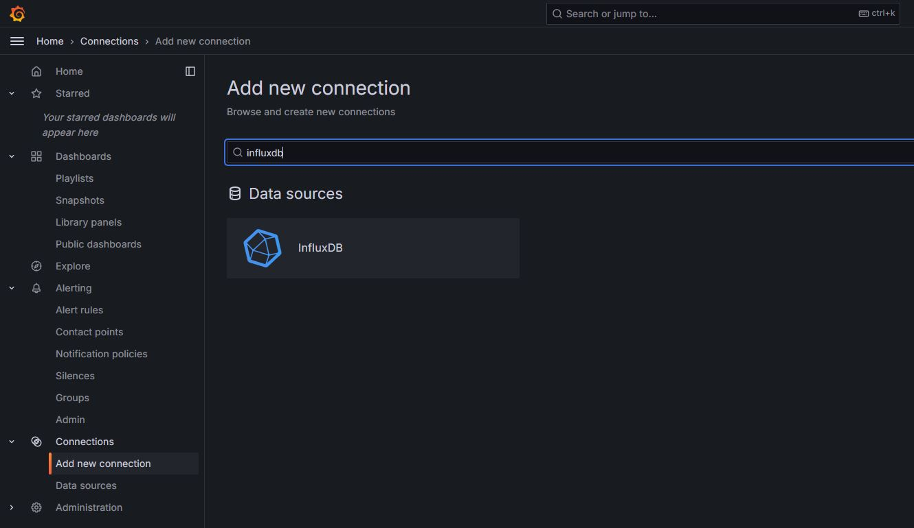
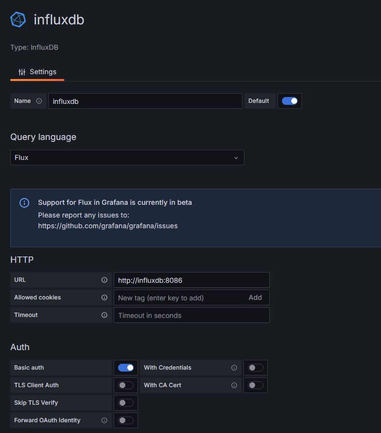
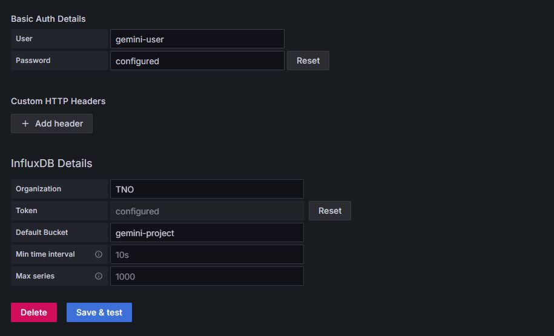
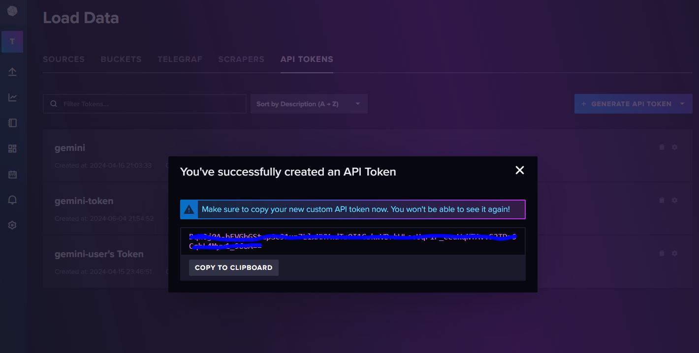
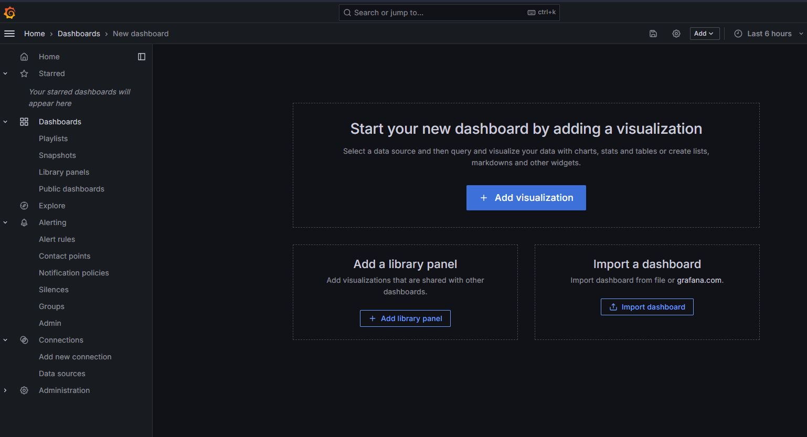
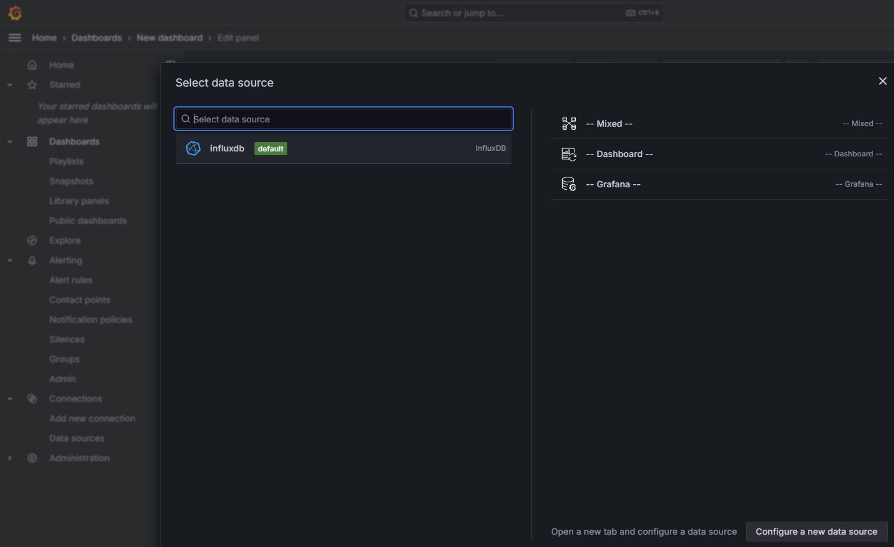
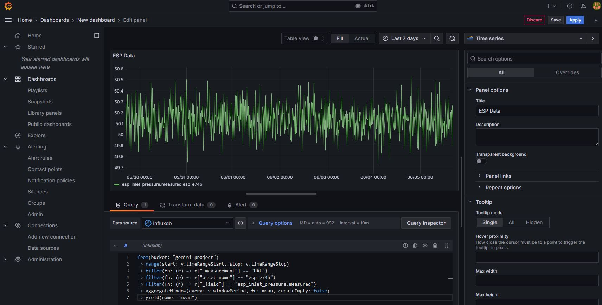
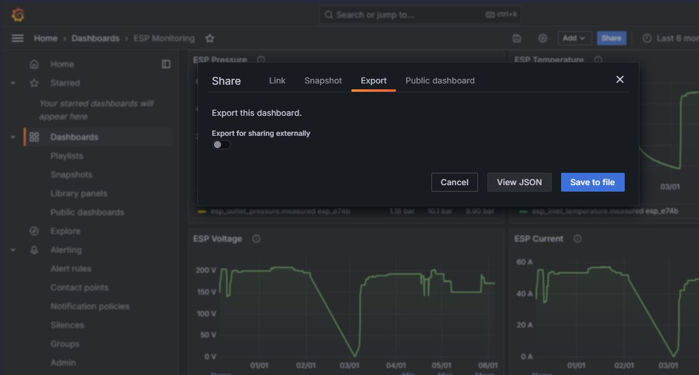
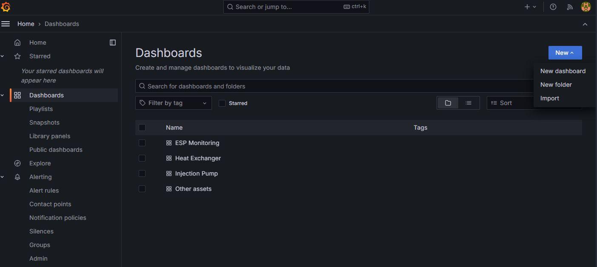
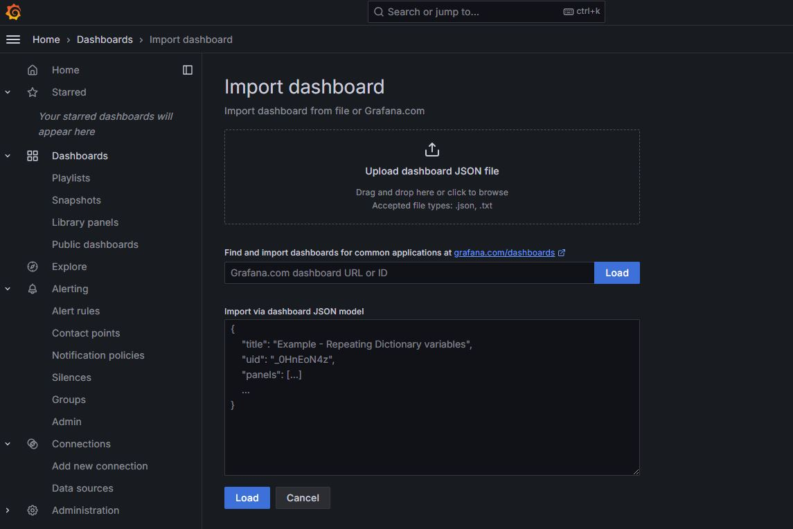

4.1. Time Series Viewer
The Time Series Viewer integrates Grafana in GEMINI for real-time and historical trend analysis.
4.1.1. Set up the InfluxDB data source
Open Connections in Grafana.
Click Add new connection.
Search for
influxdband select Data Source InfluxDB.Click Add new data source.
{kind=link}

Configure the connection:
Database name: choose a clear name (for example
gemini-influxdb)Query language:
FluxURL:
http://influxdb:8086Enable Basic auth
{kind=link}

Fill Basic Auth credentials:
Username: <you can find in your .env file>
Password: <you can find in your .env file>
Fill InfluxDB Details:
Organization: <you can find in your .env file>
Token: <create token InfluxDB> (Follow the steps below to create a token)
Default Bucket: <you can find in your .env file>
Click Save & test.
{kind=link}

4.1.1.1. Create an InfluxDB token
If you do not have a token yet:
Open
<yourdomain>:8086in a browser.Sign in with the same credentials used for basic authentication.
Create an API token (for example All Access API Token).
Copy the token and paste it into Grafana.
{kind=link}

4.1.2. Create a dashboard
Click New.
Click Add visualization.
{kind=link}

Select your InfluxDB data source. If no data source is available, complete the setup section above first.
{kind=link}

Choose a panel type (for example Time Series).
Set a panel title.
Enter a Flux query in query box
A.
from(bucket: "gemini-project")
|> range(start: v.timeRangeStart, stop: v.timeRangeStop)
|> filter(fn: (r) => r["_measurement"] == "HAL")
|> filter(fn: (r) => r["asset_name"] == "esp_e74b")
|> filter(fn: (r) => r["_field"] == "esp_inlet_pressure.measured")
|> aggregateWindow(every: v.windowPeriod, fn: mean, createEmpty: false)
|> yield(name: "mean")
Query parameter meaning:
_measurement: project nameasset_name: component/asset name_field: tag to visualize
{kind=link}

4.1.3. Export a dashboard
Click Share.
Open the Export tab.
Click Save to file.
{kind=link}

4.1.4. Import a dashboard
Click New.
Click Import.
{kind=link}

Upload a JSON file from
gemini-project/_template/grafana_template, or paste JSON text directly.
{kind=link}
